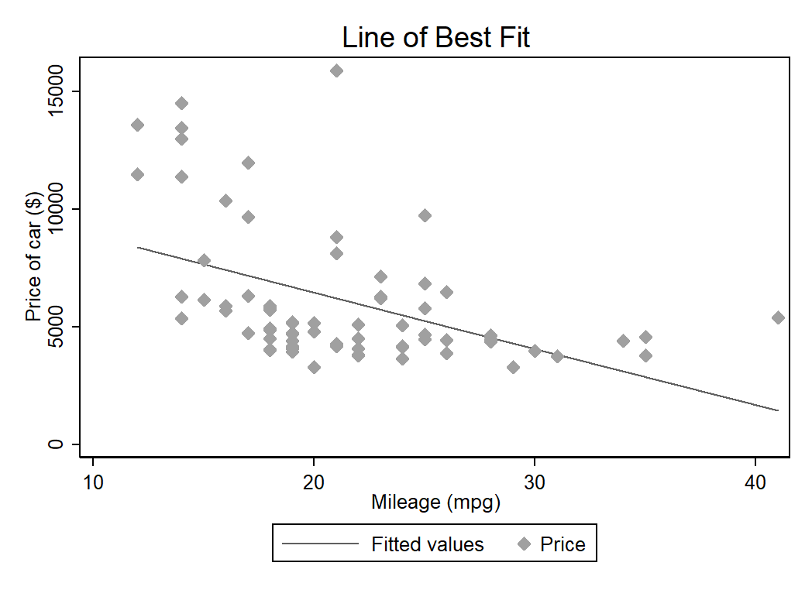
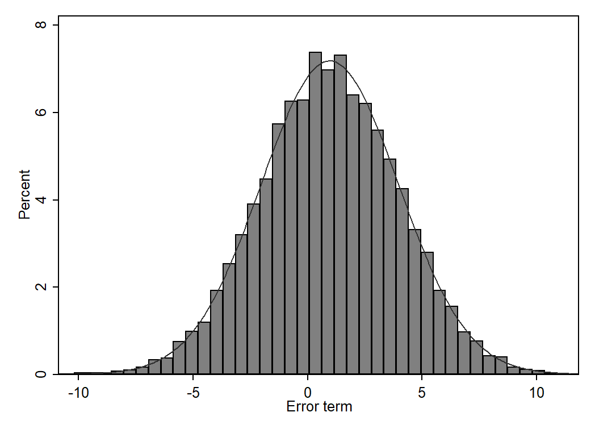

Essential Concepts¶
This section provides a concise overview of some important terms, concepts and analytcial approaches that are central to quantitative analyses of longitudinal data. It is aimed at people needing a quick refresher of key topics; the aim is not to teach you these topics for the first time.
Statistical modelling¶
Models help us make sense of the world and are more commonplace than you might think:
MacInnes (2017, p, 26) describes a model in more formal terms:
A model is a simplified, often smaller-scale, version of reality; a summary statement that includes the essential aspects we are interested in and leaves out the extraneous detail…A good model focuses on what we want to investigate , and discards other features that are not relevant.
Statistical models are formal, numeric representations of a phenomenon and its explanatory factors, and are used both to understand and make predictions about said phenomenon.
For example, we can define a statistical model to predict whether somebody will finish their PhD as follows:
Each of these factors contributes to the overall likelihood or chance of experiencing the outcome (completed PhD). Obviously this model ignores lots of other factors that are relevant to completing a PhD, but it’s not a bad approximation and can be added to if we are in possession of more/better information on a PhD student.
Linear models¶
Equation 1.1 above is an example of a linear model whereby the outcome (completing a PhD) is a linear function of a set of explanatory factors.
Each explanatory factor has a distinct, linear effect on the outcome, and our prediction for the outcome is arrived at by adding together each of these effects.
Using equation 1.1, let’s predict the probability of completing a PhD:
In this fictional example, there is an 80% chance of completing a PhD if you receive funding (40%), have good supervisors (20%), and have a settled personal life (20%). Each factor contributes to the prediction but it is clear receiving funding is the most important factor.
Linear regression models¶
How do we assign values to the explanatory factors in a linear model? That’s where linear regression comes in. Linear regression is known as the “workhorse” of quantitative social science (MacInnes, 2017) and for very good reason: many social phenomena can be modelled as a linear function of explanatory factors.
The linear regression equation (model) looks very similar to equation 1.1, just with some additional terms (parameters):
Where:
\(\text{Y}\) is a numeric outcome
\(\alpha\) is a constant effect (think of this like an initial / baseline prediction of Y before we consider the effects of the explanatory factors)
\(\text{X}\) is a set of explanatory variables (factors that are included in the model)
\(\beta\) is the numeric estimate of the effect of the explanatory variables on the outcome
\(\epsilon\) is an error term (residual), which captures the part of the outcome we cannot explain / predict using our explanatory variables and the constant term
Estimating and interpreting linear regression models¶
Regression is best understood by digging into some examples, so let’s do that using the (in)famous auto.dta data set in Stata.
sysuse auto, clear
desc, f
(1978 Automobile Data)
Contains data from C:\Program Files (x86)\Stata14\ado\base/a/auto.dta
obs: 74 1978 Automobile Data
vars: 12 13 Apr 2014 17:45
size: 3,182 (_dta has notes)
--------------------------------------------------------------------------------
storage display value
variable name type format label variable label
--------------------------------------------------------------------------------
make str18 %-18s Make and Model
price int %8.0gc Price
mpg int %8.0g Mileage (mpg)
rep78 int %8.0g Repair Record 1978
headroom float %6.1f Headroom (in.)
trunk int %8.0g Trunk space (cu. ft.)
weight int %8.0gc Weight (lbs.)
length int %8.0g Length (in.)
turn int %8.0g Turn Circle (ft.)
displacement int %8.0g Displacement (cu. in.)
gear_ratio float %6.2f Gear Ratio
foreign byte %8.0g origin Car type
--------------------------------------------------------------------------------
Sorted by: foreign
We have 74 observations and 12 variables relating to the auto repair records for a set of cars. Let’s say we want to understand the relationship between the price of a car (price) and its fuel efficiency (mpg) and mass (weight). We can state this statistical model using a slightly altered version of the general regression equation (1.2):
Now let’s estimate this statistical model using linear regression:
regress price mpg weight
Source | SS df MS Number of obs = 74
-------------+---------------------------------- F(2, 71) = 14.74
Model | 186321280 2 93160639.9 Prob > F = 0.0000
Residual | 448744116 71 6320339.67 R-squared = 0.2934
-------------+---------------------------------- Adj R-squared = 0.2735
Total | 635065396 73 8699525.97 Root MSE = 2514
------------------------------------------------------------------------------
price | Coef. Std. Err. t P>|t| [95% Conf. Interval]
-------------+----------------------------------------------------------------
mpg | -49.51222 86.15604 -0.57 0.567 -221.3025 122.278
weight | 1.746559 .6413538 2.72 0.008 .467736 3.025382
_cons | 1946.069 3597.05 0.54 0.590 -5226.245 9118.382
------------------------------------------------------------------------------
How do we interpret the results produced by the linear regression model?
Let’s start with the coefficients (effects) of the explanatory variables:
For every one-unit increase in the fuel efficiency of a car, we predict the price of a car to decline by 50 dollars on average.
For every one-unit increase in the weight of a car, we predict the price of a car to increase by 2 dollars on average.
The constant (_cons) represents our estimate of the price of a car if both mpg and weight are zero (obviously a nonsensical scenario).
How confident are we in the estimates of these effects?
We fail to reject the null hypothesis that the coefficient of
mpgis equal to zero (statistically insignificant asP>|t| > .05).We reject the null hypothesis that the coefficient of
weightis equal to zero (statistically significant asP>|t| < .05).
How good is the model overall at predicting the outcome?
The explanatory variables are highly likely to have a non-zero effect on the outcome (
Prob > F = 0.0000).The proportion of variance explained (
R-squared) is 30%, suggesting that this model accounts for about one third of the variation in the price of a car. That is, price varies across cars and we can explain some degree of variation using this statistical model.
How does linear regression work?¶
Linear regression estimates coefficients for each of the explanatory variables using the ordinary least squares (OLS) estimator.
OLS selects the estimates (\(\hat{\beta_1}\), \(\hat{\beta_2}\) etc) that minimise the sum of the squared residuals.

Assumptions underpinning regression¶
Validity: data map to the research question. Another way of putting this is that the model is properly specified: only and all relevant explanatory variables are included.
Additivity and linearity: the deterministic component of the model should be a linear function of the explanatory variables. The relationship between each explanatory variable and the outcome should be modelled in linear terms, and the predicted value of the outcome should be the sum of the coefficients for the explanatory variables (and constant).
Independence of errors: no correlation between the error term and the explanatory variables. If there is a correlation, it can lead to biased estimates.
Equal variance of errors: homoscedastic distribution of the errors. This means the degree to which your model is wrong is fairly constant across values of your explanatory variables.
Normality of errors: the errors follow a normal distribution (see below).
(Gelman and Hill, 2007)

If these assumptions are met, linear regression is considered BLUE:
Best
Linear
Unbiased
Estimator
Properties of estimators¶
Unbiased¶
We want our estimator to give the correct answer on average; that is, it can be wrong for individual applications of the estimator, but the average answer of these applications is correct (King et al., 1994).
\(\text{E}[\hat{\beta}] = \beta\)
Consistent¶
We want our estimator to produce coefficients that converge to the true value as our sample size increases.
A consistent estimator has the statistical property that as the number of data points increases it converges on the true value. (Gayle and Lambert, 2018, p. 89)
\(\hat{\beta} \rightarrow \beta\) as \(\text{n} \rightarrow \text{N}\).
Efficient¶
We want our estimator to be as precise as possible; that is, it minimises the variance of the estimate. An estimate, by definition, is uncertain and we would like to reduce that uncertainty to a minimum. Efficiency provides a way of distinguishing between unbiased estimators: An estimator that utilises more observations will be more efficient as it reduces the variance (King et al., 1994).
\(\text{Var}[\hat{\beta}]\) is minimised.